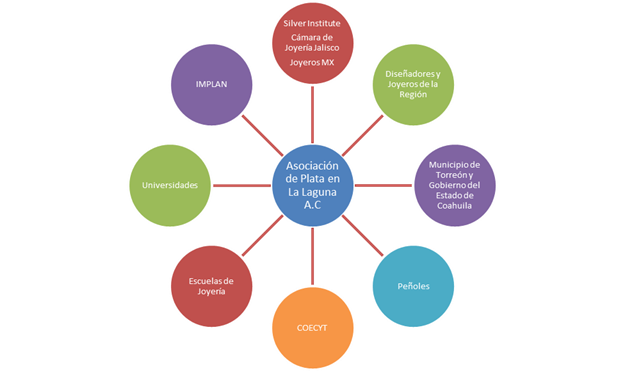

Una noticia relevante es el hecho de que la plata mexicana tuvo un mejor estándar de calidad y pureza en 2017. Otros indicadores interesantes de acuerdo con el informe presentado en abril de este año, del Instituto Mundial de la Plata, resaltan el crecimiento del 5% que se tuvo en la producción respecto a 2016, lo que equivale a 10.1 millones de onzas.
Nuestro país no sólo tiene presencia como el mayor productor de plata a nivel mundial, sino que también destaca por ser sede de la empresa productora de plata más grande en el mundo: Fresnillo Plc. Las cifras que hacen a Fresnillo estar en la cima de esta posición, son los 54.2 millones de onzas producidas en 2017, un crecimiento de casi un 20% en su producción en comparación con 2016. El crecimiento que proyecta Fresnillo para 2018 se mantiene en 20%, a pesar de que se espera una mayor demanda mundial de acuerdo con Johann Wiebe, autor principal del informe.
Con la finalidad de capitalizar las ventajas de La Laguna en torno al metal y concretar sus acciones encaminadas al desarrollo de un Centro de Diseño y Producción de Joyería de Plata; la Asociación de Plata en La Laguna A.C., es el manifiesto de un grupo de diseñadores, joyeros y personas interesadas en promover la plata. Constituida en abril de este año, la Asociación, pretende ser un organismo que le dé músculo, fortaleza al gremio para tener buenas oportunidades de negocio, relaciones, abrir mercado, capacitación, presencia y generar una cultura de diseño; comentó Alejandro Fernández, asociado.
El primer objetivo a cumplir es atraer asociados: llamar a las marcas joyeras, a los individuos relacionados con el diseño en plata, comercializadores de insumos, estudiantes; incluso, si estos no se ubican u operan en la región. La participación en una venta interna en Peñoles y TlaquepArte en mayo pasado, les ha ayudado a integrar 12 marcas. Pero ¿Por qué crear un Centro de Producción y Joyería de Plata?, ¿En qué se sustenta?.
Actualmente existe un estudio que concluye al “Centro de Producción y Joyería de Plata” como un proyecto para detonar la economía regional. El documento presentado en 2012, promovido por el municipio de Torreón y la empresa Peñoles; elaborado por el Dr. Agustín González; sopesa la importancia de la ubicación geográfica de la región, la demanda que tenemos de manufactura en Taxco y Guadalajara, sus diseñadores y la refinación local de la plata; como elementos de gran valor para sustentar este proyecto. Dicho estudio también incluye la evaluación financiera.
Diseñadores vs. Joyeros
Para llegar a ser un “Centro de Producción y Joyería de Plata”, otra de las necesidades es la creación de una base sólida de joyeros que permita ser un soporte para impulsarla y destacar a La Laguna como un centro de diseño; pues a diferencia de otras zonas plateras de la República como Taxco, Guerrero; “aquí empezamos a crear diseñadores… se formaron primero las cabezas y ahora estamos por estructurar las manos”, comenta Eduardo Benítez, asociado. No basta con que el diseñador llegue a una tienda, muestre su pieza, guste y le encarguen 100: ¿Quién me las va a hacer?, dice Alejandro Fernández, también miembro de la asociación.
En México no existe una escuela formal para joyeros a nivel licenciatura. Existen maestrías, diplomados y especialidades dentro de las carreras. Actualmente, la Universidad La Salle Laguna está buscando abrir una maestría. Hay un rompimiento entre producción y diseñador. “Viene otro tipo de planes de estudio” comentan los miembros de la asociación, la necesidad de la región es capacitar mano de obra a nivel de habilidad técnica orfebre y platero.
¿Y quiénes son los clientes de estos estudios técnicos? En primera instancia los diseñadores, pero además hace tiempo se propuso al Centro Cultural La Jabonera e incluso a la Universidad La Salle dentro de sus programas sociales, capacitación en apoyo a las comunidades, pero es un plan que no se concretó.
Por último, esta asociación buscará trabajar con el “Consejo Regulador de la Plata”, proyecto asesorado por el IMPLAN en sus inicios, cuyo objetivo es apoyar la calidad de los trabajos en joyería y construir una denominación de origen. Se espera que este organismo se constituya próximamente como Asociación Civil. Dentro de sus facultades, estará el certificar a las empresas como fe de la calidad y confianza del trabajo de los joyeros y diseñadores de La Laguna.
Relaciones Estratégicas, Asociación de Plata en La Laguna A.

Fuente: Asociación de Plata en La Laguna A.C.
TABLA:
La Laguna en el escenario de la plata
El 17.57% de las exportaciones de Torreón provienen de la Plata (incluida la plata dorada y la platinada), en bruto, semilabrada o en polvo para 2014, según el Servicio de Administración Tributaria (SAT).
Actualmente existen 4 escuelas de joyería de Plata en La Laguna que ofrecen diplomados y especialidades Con 155 egresados desde el 2009 a la fecha.
17 alumnos próximos a graduarse.
Existen 22 empresas plateras registradas como marca en La Laguna.
Una de las ventajas es que existe venta al menudeo de plata refinada ley 999.
Fuentes: SAT 2014, Asociación de Plata en La Laguna A.C. y Direcciones de las Escuelas y Diplomados de Plata de la UIA Torreón, ULSA Laguna, ITESM Campus Laguna y Academia de Diseño y Arte en Joyería.